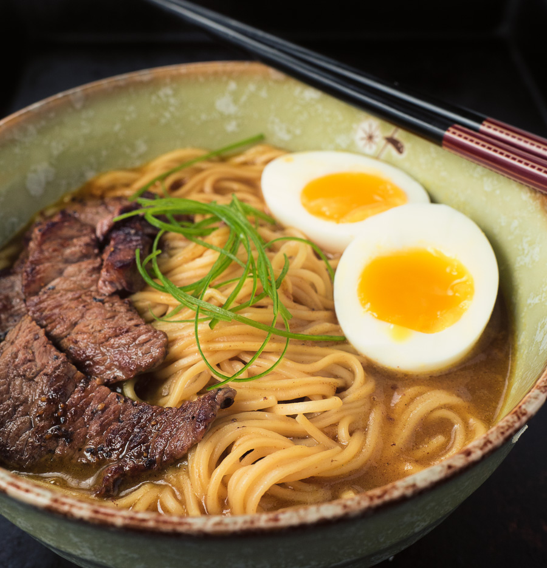

Will Lu, who's from China, tells me personally that he often misses food in China while studying in America, this is also partly why he often orders Japanese food and Chinese food with me at weekends. He loves to eat Japanese and Chinese food.
He especially likes to eat ramen and sushi. He once said that when he could eat food he truly likes, he would feel very grateful and joyful. But overall, I also believe that Chinese food is very good.